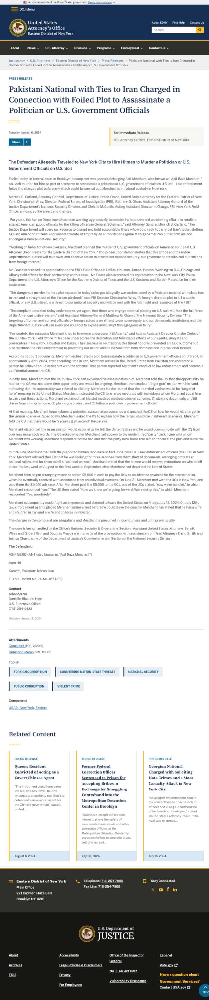
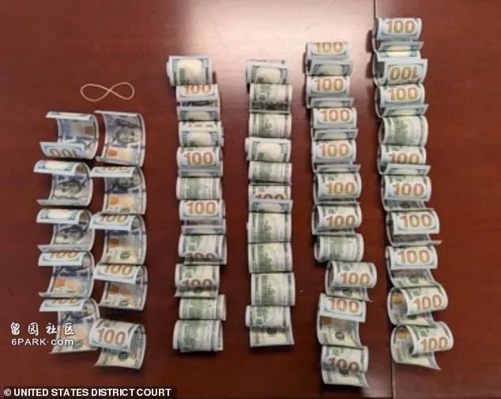
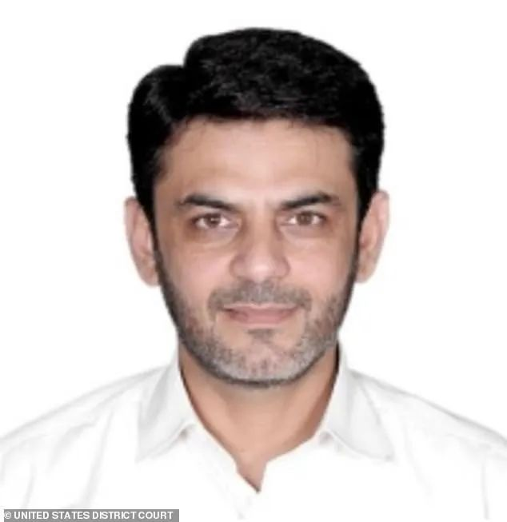
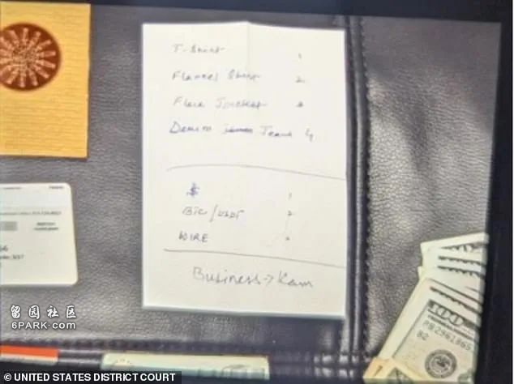

就在刚刚，联邦司法部发表一份声明，FBI逮捕了46岁的巴基斯坦公民阿西夫·麦钱特（Asif Merchant），他受伊朗之托在美国寻找杀手试图暗杀川普及高级官员，不过他找的两个杀手竟然都是FBI卧底探员。
7月12日，麦钱特试图搭乘飞机逃跑，结果在机场被FBI探员逮捕。不过，麦钱特与7月13日暗杀川普的行动无关。

根据法庭文件显示，麦钱特在巴基斯坦有妻子和孩子，在伊朗也有妻子和孩子。大概在今年4月份，麦钱特在伊朗的家中待了一段时间后返回巴基斯坦，并从巴基斯坦抵达美国，招募杀手暗杀川普和美国高级官员。
而该杀手向FBI举报了这件事并成为FBI的秘密线人，代号为：CS。
6月初，麦钱特在纽约见到了CS，并详细阐述了暗杀计划，麦钱特的暗杀计划包含至少三种方式——
(1) 从目标家中窃取秘密文件或秘密U盘
(2) 策划抗议活动；
(3) 杀害政客或政府官员。
麦钱特指示CS雇佣杀手来执行这些计划。于是，FBI安排了一名卧底探员，代号为:UC，与麦钱特见面。
6月中旬，麦钱特与UC见面了，表示希望计划在8月的最后一周或者9月的第一周进行暗杀。
随后，麦钱特在一名海外人士的协助下得到了5000美元。6月21日，麦钱特再次与UC在纽约见面，并向UC支付了5000美元预付款。

在安排好这一切后，麦钱特计划于7月12日离开美国，不过就在他以为万无一失的时候，在他登机前，FBI赶到纽约机场，将麦钱特逮捕。
据称，在收到FBI的报告后，特勤局理应对川普的竞选集会进行加强安保，然而就在麦钱特被逮捕后第二天，川普在宾夕法尼亚州巴特勒进行竞选演讲时，遭到托马斯·马修·克鲁克斯（Thomas Matthew Crooks）的暗杀，造成集会民众1死2伤的惨剧，幸好川普在关键时刻偏了一下头，子弹从其耳朵边飞过，耳朵被飞速的子弹撕裂。

在川普遭遇暗杀未遂事件后，很快有民主党议员声称暗杀事件与伊朗有关，不过，截至目前，没有证据显示麦钱特与克鲁克斯有联系。
起因
报复杀害伊朗将军
美国司法部长梅里克·加兰德（Merrick B. Garland）表示：“多年来，司法部一直在积极反击伊朗对美国政府官员因杀害伊朗将军苏莱曼尼而进行的无耻和不懈的报复行为。司法部将不遗余力地打击和追究那些试图实施伊朗针对美国公民的致命阴谋的人，也不会容忍独裁政权针对美国政府官员并危害美国国家安全的企图。”
联邦调查局（FBI）局长克里斯托弗·雷（Christopher Wray）则说：“今天指控中揭露的这起危险的雇凶谋杀案，据称是由一名与伊朗关系密切的巴基斯坦人策划的，完全是伊朗人的伎俩。外国指使的谋杀公职人员或任何美国公民的阴谋对我们的国家安全构成威胁，联邦调查局将全力以赴予以打击。”

据称，FBI达拉斯、休斯顿、坦帕、波士顿、华盛顿特区、芝加哥和奥尔巴尼的办公室均参与了这项调查，纽约市警察局以及德州南区联邦检察官办公室以及海关与边境保护局也加入了调查。
“幸运的是，麦钱特试图雇佣的刺客，是FBI卧底探员。”FBI纽约外勤处代理助理局长克里斯蒂·柯蒂斯（Christie Curtis）说。“这起案件凸显了我们纽约、休斯顿和达拉斯的探员、分析师和检察官的奉献精神和巨大努力。他们成功化解了这一威胁，不仅避免了悲剧的发生，也重申了联邦调查局保护我们国家及其公民免受国内和国际威胁的承诺。”